pacman::p_load(treemap, treemapify, tidyverse) Hands-On Exercise 9-5: Treemap Visualisation with R
9-5: 1 Overview
This exercise will cover designing treemap using appropriate R package and consists of three main sections
- Manipulate transaction data into a treemap structure by using selected functions provided in dplyr package
- Plot static treemap by using treemap package
- Design interactive treemap by using d3treeR package.
9-5: 2 Install and Launch R Packages
The code chunks below are used to installs and loads treemap and tidyverse packages into R.
9-5: 3 Data Wrangling
This exercise uses REALIS2018.csv data that contains information of private property transaction records in 2018. The dataset is extracted from REALIS portal of Urban Redevelopment Authority (URA).
9-5: 3.1 Import dataset
The code chunk below uses read_csv() of readr to import realis2018.csv into R and parsed it into tibble R data.frame format. The output tibble data.frame is called realis2018.
Show Code
realis2018 <- read_csv("data/realis2018.csv")9-5: 3.2 Data wrangling and Manipulation
The data.frame realis2018 is in transaction record form, which is highly disaggregated and not appropriate to be used to plot a treemap. This section will cover the following steps to prepare a data.frame that is appropriate for treemap visualisation.
- Group transaction records by Project Name, Planning Region, Planning Area, Property Type and Type of Sale
- Compute Total Unit Sold, Total Area, Median Unit Price and Median Transacted Price by applying appropriate summary statistics on No. of Units, Area (sqm), Unit Price ($ psm) and Transacted Price ($) respectively.
Two key verbs of dplyr package, namely: group_by() and summarize() will be used to perform these steps.
- group_by() breaks down a data.frame into specified groups of rows.
- When verbs are applied on the resulting object, they will automatically be applied “by group”.
Grouping affects the verbs as follows:
- Grouped select() is the same as ungrouped select(), except that grouping variables are always retained
- Grouped arrange() is the same as ungrouped; unless set .by_group = TRUE, in which case it orders first by the grouping variables.
- mutate() and filter() are most useful in conjunction with window functions (like rank(), or min(x) == x). They are described in detail in vignette(“window-functions”).
- sample_n() and sample_frac() sample the specified number/fraction of rows in each group.
- summarise() computes the summary for each group.
In this section, group_by() will used together with summarise() to derive the summarised data.frame.
More information on dplyr methods can be found in Introduction to dplyr.
9-5: 3.3 Grouped Summaries Without pipe
The code chank below shows a typical two lines code approach to perform the steps.
Show Code
realis2018_grouped <- group_by(realis2018, `Project Name`,
`Planning Region`, `Planning Area`,
`Property Type`, `Type of Sale`)
realis2018_summarised <- summarise(realis2018_grouped,
`Total Unit Sold` = sum(`No. of Units`, na.rm = TRUE),
`Total Area` = sum(`Area (sqm)`, na.rm = TRUE),
`Median Unit Price ($ psm)` = median(`Unit Price ($ psm)`, na.rm = TRUE),
`Median Transacted Price` = median(`Transacted Price ($)`, na.rm = TRUE))
Note
- Aggregation functions such as sum() and median() obey the usual rule of missing values: if there are any missing value in the input, the output will be a missing value. The argument na.rm = TRUE removes the missing values prior to computation.
- The code chunk above is not very efficient because each intermediate data.frame has to be given a name, even though they are not important.
9-5: 3.4 Grouped Summaries With pipe
The code chunk below shows a more efficient way to tackle the same processes by using the pipe, %>%. More information about pipe can be found in this article Pipes in R Tutorial for Beginners
Show Code
realis2018_summarised <- realis2018 %>%
group_by(`Project Name`,`Planning Region`,
`Planning Area`, `Property Type`,
`Type of Sale`) %>%
summarise(`Total Unit Sold` = sum(`No. of Units`, na.rm = TRUE),
`Total Area` = sum(`Area (sqm)`, na.rm = TRUE),
`Median Unit Price ($ psm)` = median(`Unit Price ($ psm)`, na.rm = TRUE),
`Median Transacted Price` = median(`Transacted Price ($)`, na.rm = TRUE))9-5: 4 Design Treemap with treemap Package
treemap package is a R package specially designed to offer great flexibility in drawing treemaps. The core function, namely: treemap() offers at least 43 arguments. In this section will cover the major arguments for designing elegant and truthful treemaps.
9-5: 4.1 Design a Static treemap
treemap() of treemap package is used to plot a treemap showing the distribution of median unit prices and total unit sold of resale condominium by geographic hierarchy in 2017.
First, the records belongs to resale condominium property type will be selected from realis2018_selected data frame.
Show Code
realis2018_selected <- realis2018_summarised %>%
filter(`Property Type` == "Condominium", `Type of Sale` == "Resale")9-5: 4.2 Use Basic Arguments
The code chunk below designs a treemap by using three core arguments of treemap(), namely: index, vSize and vColor.
Show Code
treemap(realis2018_selected,
index=c("Planning Region", "Planning Area", "Project Name"),
vSize="Total Unit Sold",
vColor="Median Unit Price ($ psm)",
title="Resale Condominium by Planning Region and Area, 2017",
title.legend = "Median Unit Price (S$ per sq. m)"
)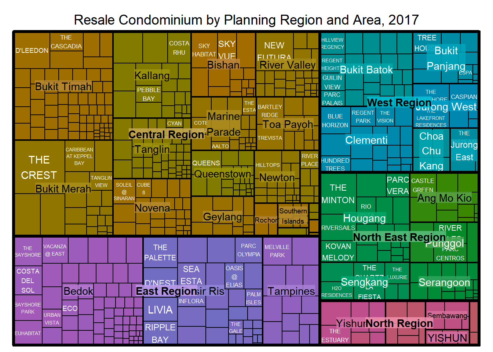
Thing to learn from the code
- index
- The index vector must consist of at least two column names or else no hierarchy treemap will be plotted.
- If multiple column names are provided, such as the code chunk above, the first name is the highest aggregation level, the second name the second highest aggregation level, and so on.
- vSize The column must not contain negative values, because its values will be used to map the size of the rectangles of the treemaps.
Warning
- The treemap above is wrongly coloured.
- For a correctly designed treemap, the colours of the rectangles should be in different intensity showing, in our case, median unit prices.
- For treemap(), vColor is used in combination with the argument type to determine the colours of the rectangles.
- Without defining type, like the code chunk above, treemap() assumes type = index, in our case, the hierarchy of planning areas.
9-5: 4.3 Work with vColor and type arguments
In the code below, type argument is defined as value.
Show Code
treemap(realis2018_selected,
index=c("Planning Region", "Planning Area", "Project Name"),
vSize="Total Unit Sold",
vColor="Median Unit Price ($ psm)",
type = "value",
title="Resale Condominium by Planning Region and Area, 2017",
title.legend = "Median Unit Price (S$ per sq. m)"
)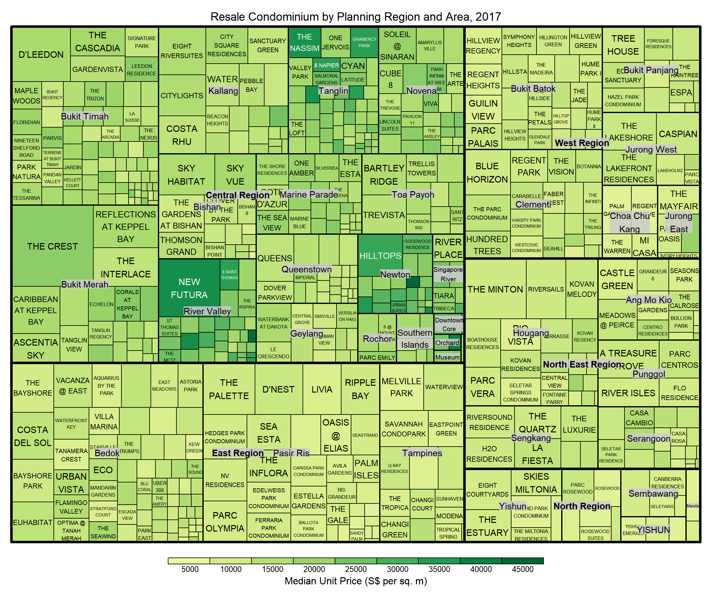
Things to learn from the code
- The rectangles are coloured with different intensity of green, reflecting their respective median unit prices
- The legend reveals that the values are binned into ten bins, i.e. 0-5,000, 5,000-10,000, etc. with an equal interval of 5,000.
9-5: 4.4 Colours in treemap Package
There are two arguments that determine the mapping to colour palettes: mapping and palette. The only difference between “value” and “manual” is the default value for mapping.
The “value” treemap considers palette to be a diverging colour palette (say ColorBrewer’s “RdYlBu”), and maps it in such a way that:
- 0 corresponds to the middle colour (typically white or yellow)
- max(abs(values)) to the left-end colour
- max(abs(values)) to the right-end colour.
The “manual” treemap simply maps min(values) to the left-end colour, max(values) to the right-end colour, and mean(range(values)) to the middle colour.
9-5: 4.5 The “value” Type treemap
The code chunk below shows a value type treemap.
Show Code
treemap(realis2018_selected,
index=c("Planning Region", "Planning Area", "Project Name"),
vSize="Total Unit Sold",
vColor="Median Unit Price ($ psm)",
type="value",
palette="RdYlBu",
title="Resale Condominium by Planning Region and Area, 2017",
title.legend = "Median Unit Price (S$ per sq. m)"
)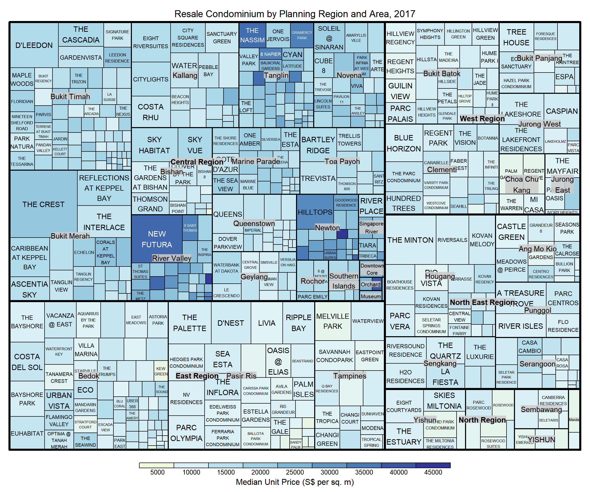
Things to learn from the code
- Although the colour palette used is RdYlBu, there are no red rectangles in the treemap above.
- This is because all the median unit prices are positive.
- The reason why we only see 5000 to 45000 in the legend is because the range argument is by default c(min(values, max(values)) with some pretty rounding.
9-5: 4.6 The “manual” Type treemap
The “manual” type does not interpret the values as the “value” type does. Instead, the value range is mapped linearly to the colour palette.
The code chunk below shows a manual type treemap.
Show Code
treemap(realis2018_selected,
index=c("Planning Region", "Planning Area", "Project Name"),
vSize="Total Unit Sold",
vColor="Median Unit Price ($ psm)",
type="manual",
palette="RdYlBu",
title="Resale Condominium by Planning Region and Area, 2017",
title.legend = "Median Unit Price (S$ per sq. m)"
)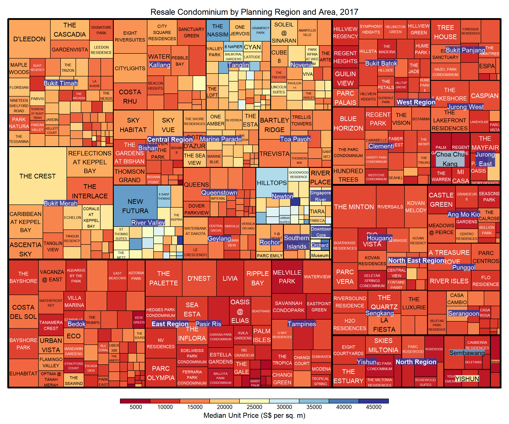
Things to learn from the code
- The colour scheme used is very confusing.
- This is because mapping = (min(values), mean(range(values)), max(values))
- It is not wise to use diverging colour palette such as RdYlBu if the values are all positive or negative
To overcome this, a single colour palette should be used, such as Blues.
Show Code
treemap(realis2018_selected,
index=c("Planning Region", "Planning Area", "Project Name"),
vSize="Total Unit Sold",
vColor="Median Unit Price ($ psm)",
type="manual",
palette="Blues",
title="Resale Condominium by Planning Region and Area, 2017",
title.legend = "Median Unit Price (S$ per sq. m)"
)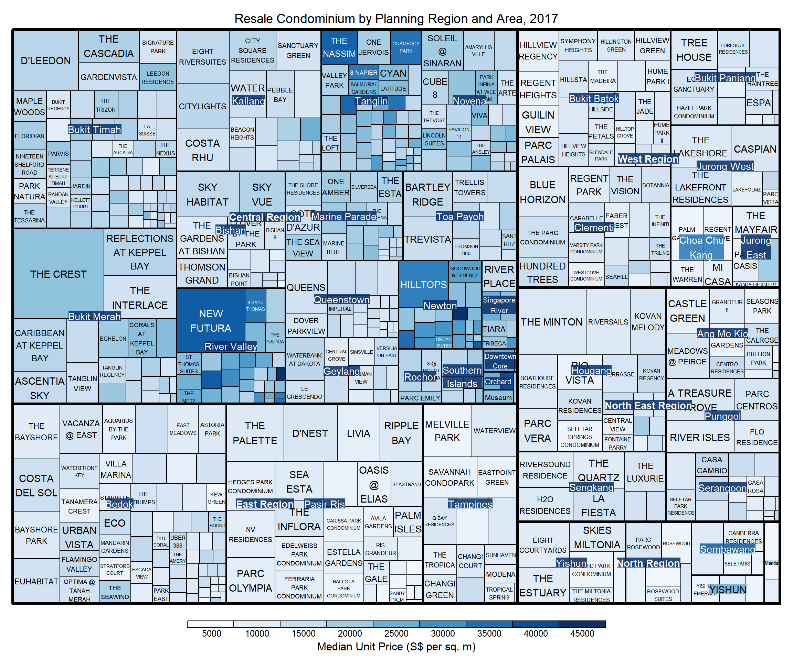
9-5: 4.7 Treemap Layout
treemap() supports two popular treemap layouts, namely: “squarified” and “pivotSize”. The default is “pivotSize”.
The squarified treemap algorithm (Bruls et al., 2000) produces good aspect ratios, but ignores the sorting order of the rectangles (sortID). The ordered treemap, pivot-by-size, algorithm (Bederson et al., 2002) takes the sorting order (sortID) into account while aspect ratios are still acceptable.
9-5: 4.8 Working with algorithm Argument
The code below plots a squarified treemap by changing the algorithm argument.
Show the code
treemap(realis2018_selected,
index=c("Planning Region", "Planning Area", "Project Name"),
vSize="Total Unit Sold",
vColor="Median Unit Price ($ psm)",
type="manual",
palette="Blues",
algorithm = "squarified",
title="Resale Condominium by Planning Region and Area, 2017",
title.legend = "Median Unit Price (S$ per sq. m)"
)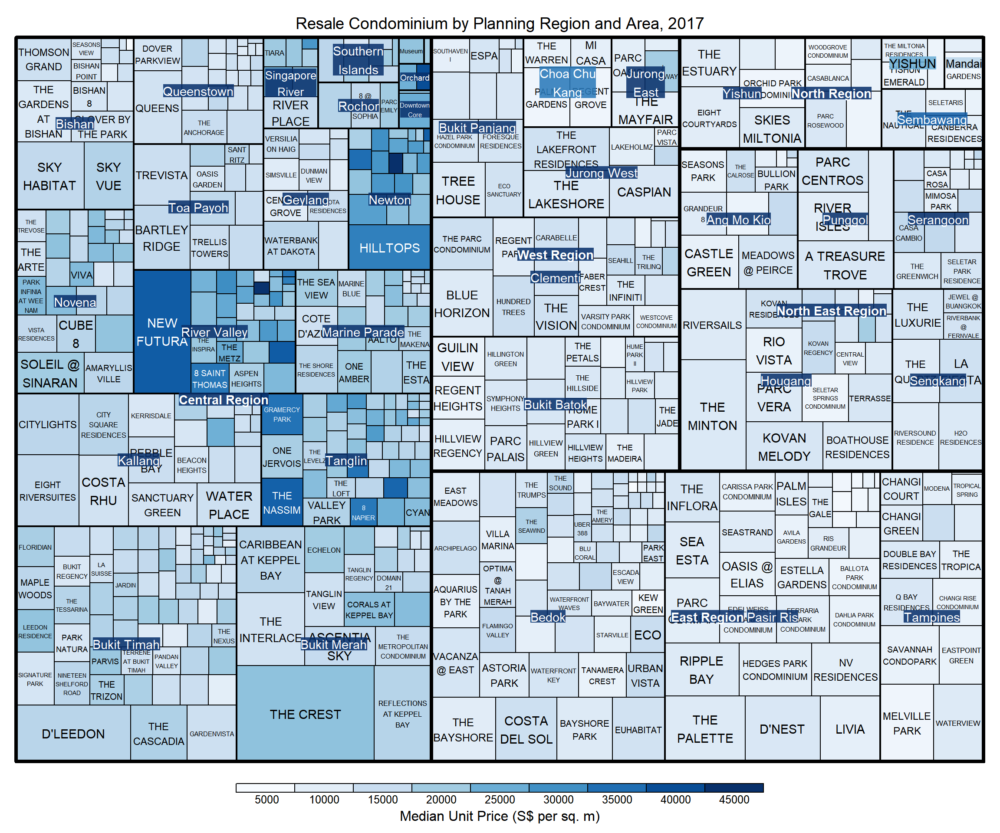
9-5: 4.9 Using sortID
When “pivotSize” algorithm is used, sortID argument can be used to determine the order in which the rectangles are placed from top left to bottom right.
Show the code
treemap(realis2018_selected,
index=c("Planning Region", "Planning Area", "Project Name"),
vSize="Total Unit Sold",
vColor="Median Unit Price ($ psm)",
type="manual",
palette="Blues",
algorithm = "pivotSize",
sortID = "Median Transacted Price",
title="Resale Condominium by Planning Region and Area, 2017",
title.legend = "Median Unit Price (S$ per sq. m)"
)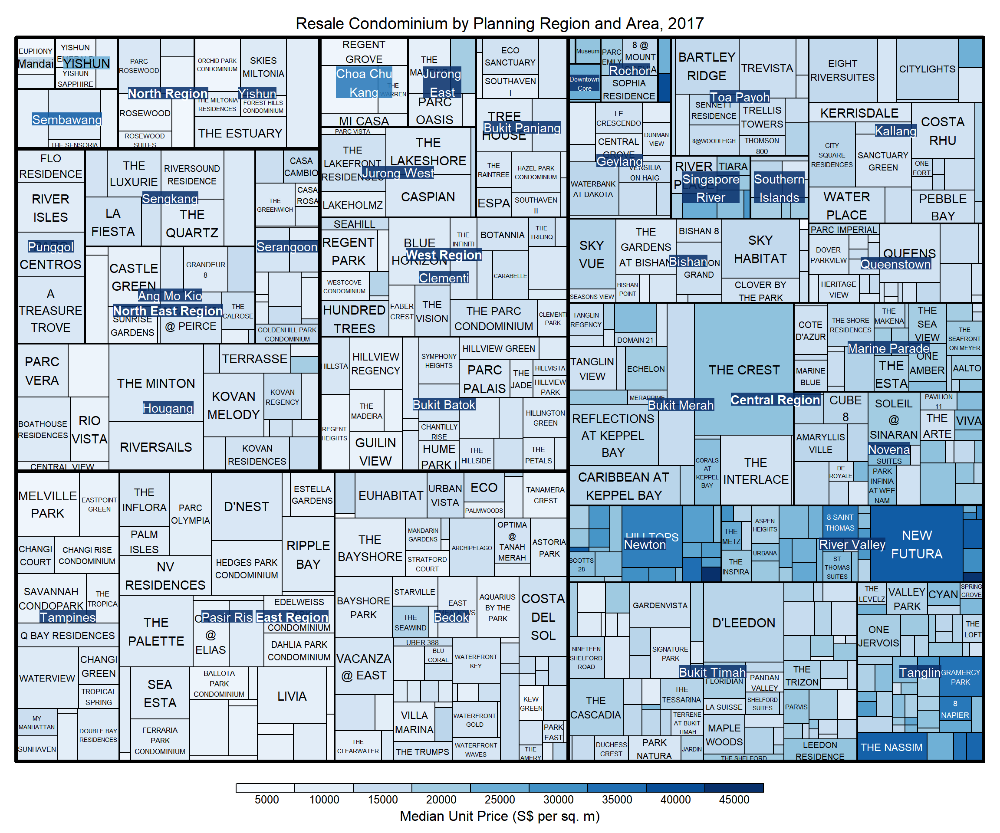
9-5: 5 Design Treemap Using treemapify Package
treemapify is a R package specially developed to draw treemaps in ggplot2. This section will cover how to design treemps closely resembling treemaps from previous section by using treemapify.
Please refer to this Introduction to “treemapify” for more information and its user guide.
9-5: 5.1 Design a Basic treemap
Show Code
ggplot(data=realis2018_selected,
aes(area = `Total Unit Sold`,
fill = `Median Unit Price ($ psm)`),
layout = "scol",
start = "bottomleft") +
geom_treemap() +
scale_fill_gradient(low = "light blue", high = "blue") 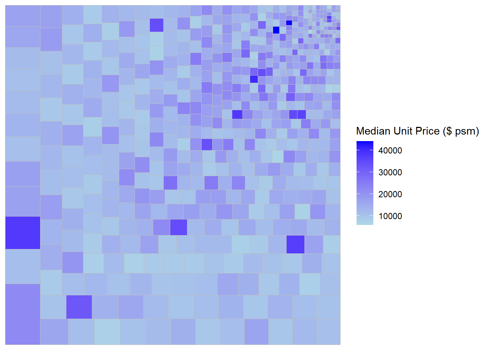
Show Code
ggplot(data=realis2018_selected,
aes(area = `Total Unit Sold`,
fill = `Median Unit Price ($ psm)`),
layout = "scol",
start = "bottomleft") +
geom_treemap() +
scale_fill_gradient(low = "light blue", high = "blue",
guide = guide_colorbar(
barwidth = unit(15, "cm"))
) +
theme(legend.position = "bottom")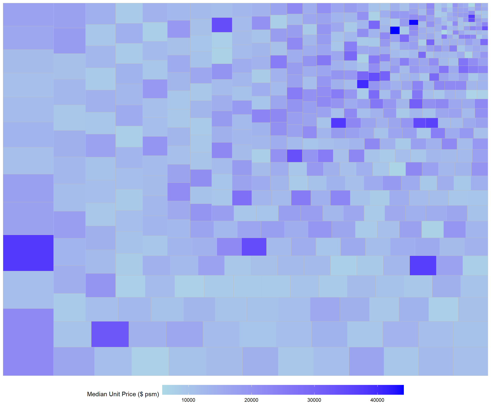
9-5: 5.2 Define Hierarchy
Show Code
ggplot(data=realis2018_selected,
aes(area = `Total Unit Sold`,
fill = `Median Unit Price ($ psm)`,
subgroup = `Planning Region`),
start = "topleft") +
geom_treemap() +
scale_fill_gradient(low = "light blue", high = "blue",
guide = guide_colorbar(
barwidth = unit(15, "cm"))
) +
theme(legend.position = "bottom")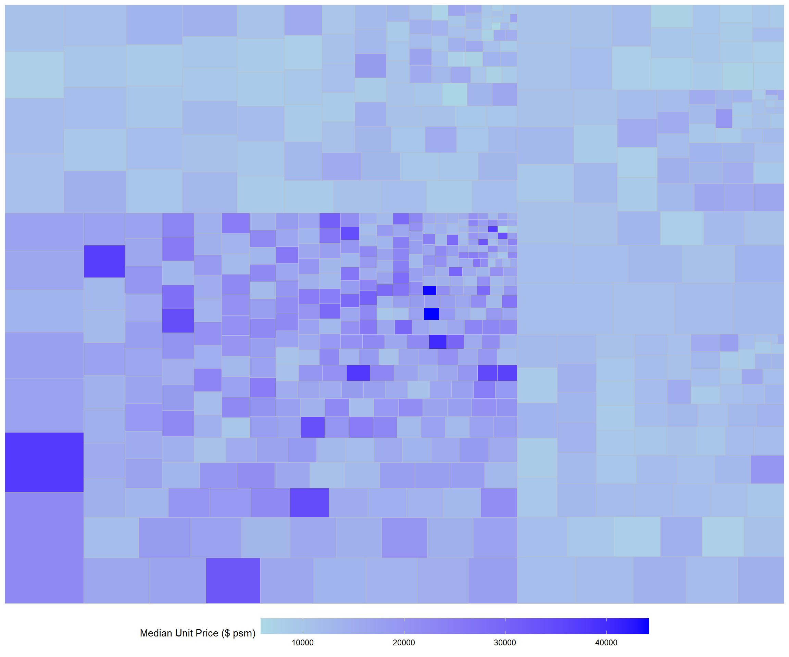
Show Code
ggplot(data=realis2018_selected,
aes(area = `Total Unit Sold`,
fill = `Median Unit Price ($ psm)`,
subgroup = `Planning Region`,
subgroup2 = `Planning Area`)) + #added as subgroup2
geom_treemap() +
scale_fill_gradient(low = "light blue", high = "blue",
guide = guide_colorbar(
barwidth = unit(15, "cm"))
) +
theme(legend.position = "bottom")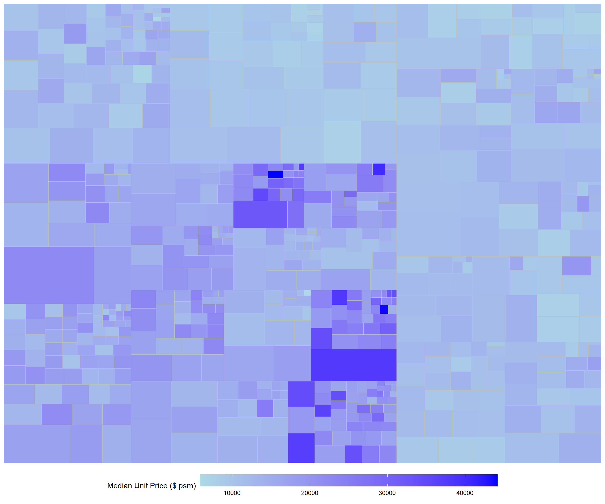
Show Code
ggplot(data=realis2018_selected,
aes(area = `Total Unit Sold`,
fill = `Median Unit Price ($ psm)`,
subgroup = `Planning Region`,
subgroup2 = `Planning Area`)) +
geom_treemap() +
geom_treemap_subgroup2_border(colour = "grey40",
size = 2) +
geom_treemap_subgroup_border(colour = "red") +
scale_fill_gradient(low = "light blue", high = "blue",
guide = guide_colorbar(
barwidth = unit(15, "cm"))
) +
theme(legend.position = "bottom")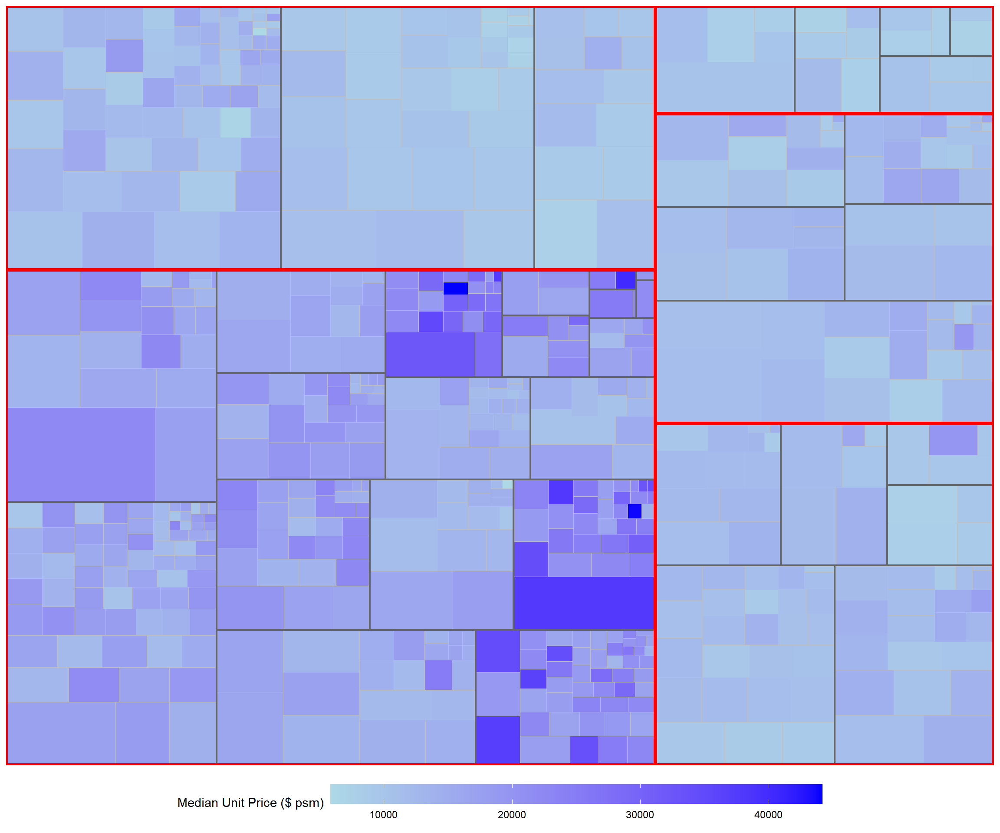
9-5: 6 Design Interactive Treemap using d3treeR
9-5: 6.1 Install d3treeR Package
These are the steps to install an R package which is not available in cran.
Step 1) If this is the first time installing a package from github, the devtools package can be installed using the code below or else skip this step.
Step 2) Load devtools library and install the package found in GitHub using the code below.
Step 3) The d3treeR package can be launched
9-5: 6.2 Design an Interactive treemap
The codes below perform two processes.
Step 1) treemap() is used to build a treemap by using selected variables in the condominium data.frame. The treemap created is saved as an object called tm.
Show Code
tm <- treemap(realis2018_summarised,
index=c("Planning Region", "Planning Area"),
vSize="Total Unit Sold",
vColor="Median Unit Price ($ psm)",
type="value",
title="Private Residential Property Sold, 2017",
title.legend = "Median Unit Price (S$ per sq. m)"
)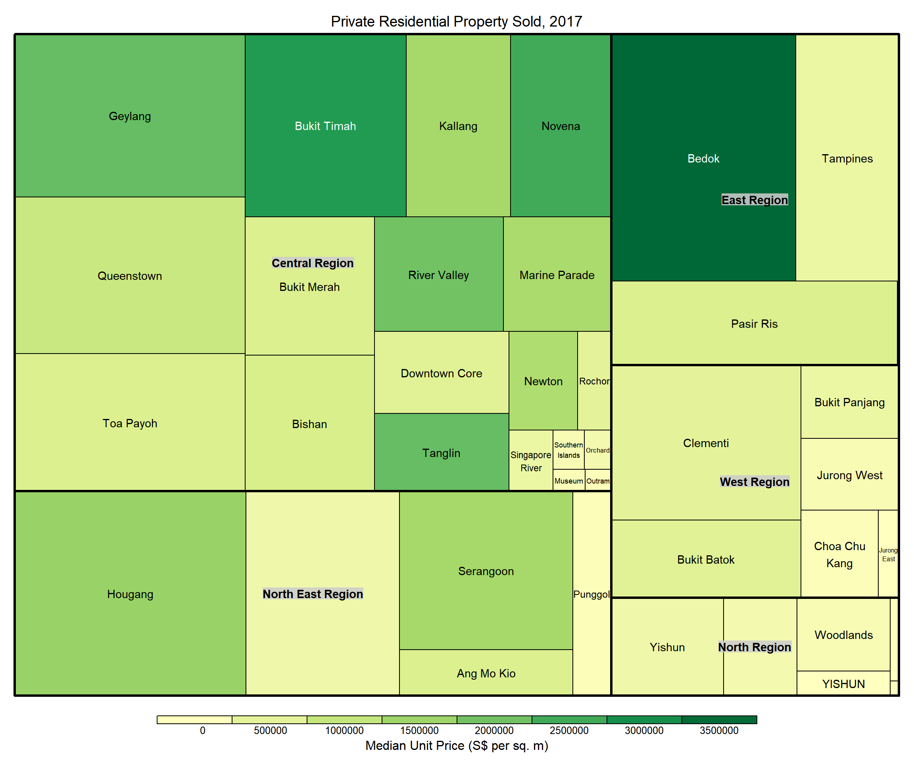
Step 2) Then d3tree() is used to build an interactive treemap.
Show Code
d3tree(tm,rootname = "Singapore")
Tip
Click on any of the boxes to view the towns inside the chosen region!